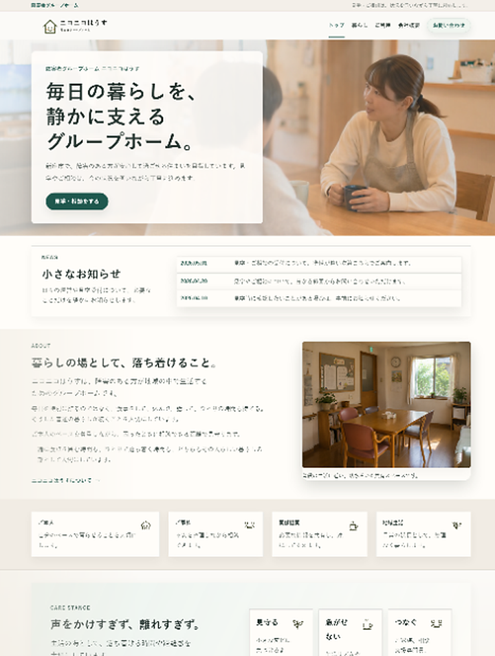

自主制作 / 実務想定案件
障害者グループホーム
ニコニコはうす 様
障害者グループホームのコーポレートサイトを想定し、短期的な問い合わせ誘導だけを目的としたLPではなく、「ここなら安心して暮らせそう」と感じられる安心感・信頼感・実在感を重視して制作しました。お問い合わせへの導線も意識しつつ、ご家族や支援者が落ち着いて確認できるよう、伝え方と見せ方を調整しています。
- 種別
- 障害者グループホームの架空コーポレートサイト
- 担当
- 構成設計、情報整理、HTML/CSS実装、レスポンシブ対応、UI調整、画像・動画生成
- ターゲット
- 入居を検討するご本人・ご家族、相談支援員、関係機関
- コンセプト
- 静かな安心感、普通の暮らし、情報の分かりやすさ
- 地域設定
- 埼玉県新座市 / 新座駅周辺